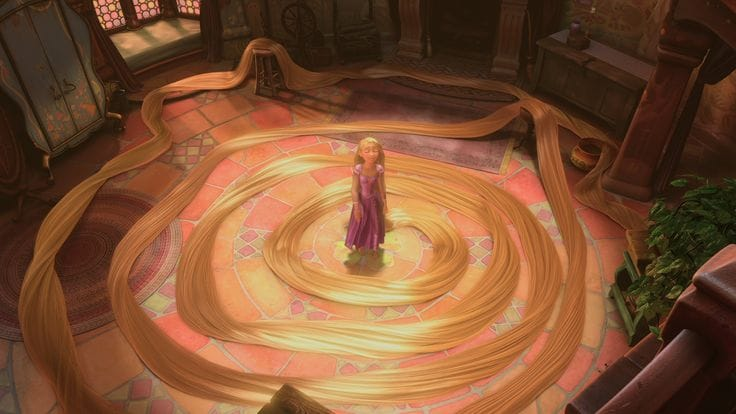
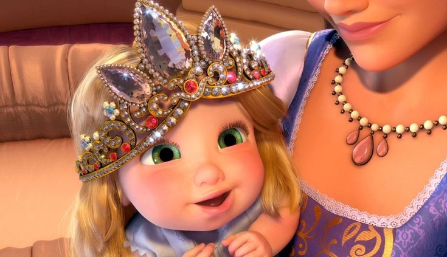

1. Nama Rapunzel berasal dari tanaman asli bernama rampion atau selada domba.
2. Kisah ini berusia lebih dari 400 tahun, pertama kali ditulis di Italia pada tahun 1634.
3. Rambutnya di Tangled panjangnya 70 kaki dan beratnya sekitar 4,5 kg di dunia nyata!
4. Rambut ajaibnya dapat menyembuhkan, bersinar, dan membuat orang awet muda.
5. Mother Gothel di Tangled sebenarnya bukan penyihir, melainkan wanita egois yang ingin tetap awet muda.
6. Kisah ini melambangkan kebebasan dan pertumbuhan pribadi — melarikan diri dari menara berarti meraih kemerdekaan.
7. Lentera melayang terinspirasi oleh festival lentera sungguhan di Thailand dan Tiongkok.
8. Tangled adalah film animasi putri 3D pertama Disney (2010).
9. Rapunzel adalah Putri Disney pertama yang memiliki kekuatan magisnya sendiri.
10. Nama kerajaan, Corona, berarti "mahkota" dalam bahasa Latin.
11. Dalam kisah Grimm asli, kisahnya jauh lebih kelam — sang pangeran dibutakan, dan Rapunzel memiliki anak kembar.
12. Rapunzel dan Flynn muncul di Frozen saat adegan penobatan Elsa.
13. Pesan film ini: cahayamu tetap bersinar, bahkan dalam kegelapan.